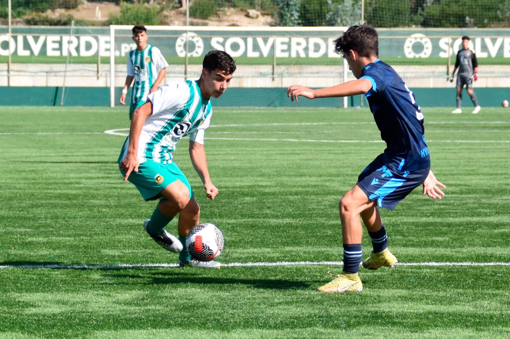
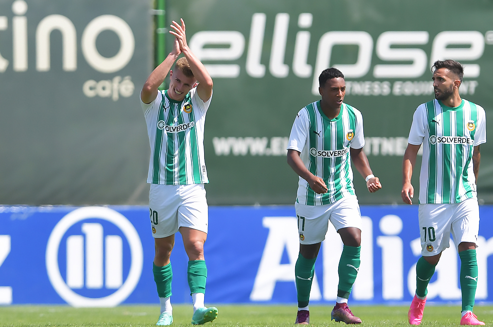
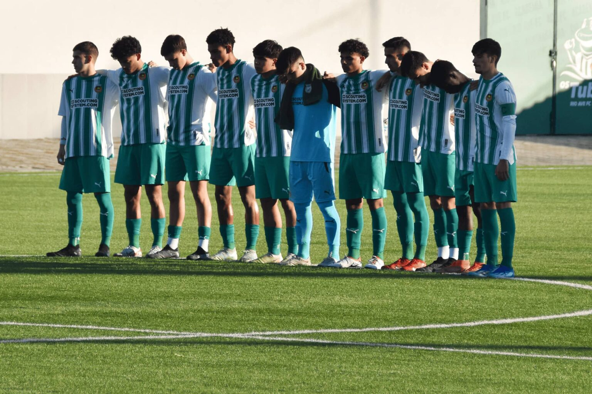

U17 : Une victoire savoureuse
Les U17 gagnent trois points importants après un match difficile !
Jouant à 10 dès les premières minutes, l'équipe de Pedrinho ne
s'est pas laissée intimider et a battu le FC Famalicão 2-0 !
Malgré la première partie…

Rio Ave FC parmi ceux qui profitent au maximum de l'entraînement
Le CIES, l'Observatoire du football, a récemment publié une autre
étude qui apporte des conclusions intéressantes sur un problème
urgent du football international : l'utilisation de joueurs formés
au club par leurs principales équipes respectives. Au fil des
années, le Rio Ave FC…

Équipe B : Jeu intense résolu par la marge minimale
Un autre tour de la 1ère division du Championnat de District s'est
joué cet après-midi. Le Rio Ave FC affrontait le SC Nun´Álvares,
une équipe qui avait trois points d'avance sur nous au début de ce
tour. Les hommes de Tomas Galhardo ne sont pas…